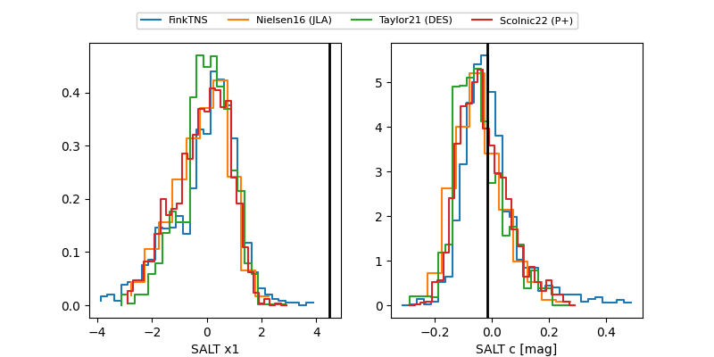

FINK: ZTF25abqliay
Lasair: ZTF25abqliay
ALeRCE: ZTF25abqliay
TNS: 2025xmz
YSE: 2025xmz
ZTF25abqliay (ztf,fink)
2025xmz (tns,yse)
equatorial (ra, dec) = (342.7016,-12.10304)
galactic (l, b) = (54.9752,-57.99750)

last ztfg=19.88, ztfr=20.12
4 ztfg, 5 ztfr detections